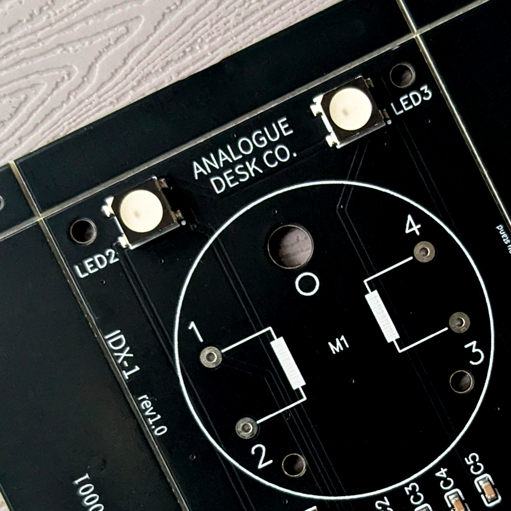

IDX-1 / User Manual
Model: IDX-1
Batch: 001
Date: 2026-04-20

01 / THE CONCEPT
IDX-1 bridges the gap between the ephemeral nature of digital data and the tactile permanence of instrumentation. Whether tracking market volatility or environmental signals, you now have a physical anchor for your most important data.
We believe in open architecture.
02 / PRE-FLIGHT CHECK
Before powering the device for the first time, please note:
- Power Input: Use the provided USB-C cable. Connect to a standard 5V DC (0.5A) USB power source.
- WiFi: IDX-1 is designed for 2.4GHz WPA2 Home Networks. It is not compatible with 5GHz-only bands or Captive Portals.
- Mechanical Care: The needle is driven by a precision stepper motor. Do not manually rotate the needle, as this may cause misalignment or damage.
- Safety: Consult and retain the supplied safety information.
03 / SETUP WIFI
- Power On: Connect the USB-C cable. The device will glow deep blue, indicating it is ready for setup.
- Access Point: On your smartphone or laptop, connect to the WiFi network named
IDX-1_setup.
- Portal: A configuration page should open automatically. If not, navigate to
http://192.168.4.1.
- Password: Use
analoguedeskco.
- Credentials: Select your home WiFi and enter your password.
- IP Address: Once connected, the device will display its local IP address. Copy this address for step 05.
- Finish: Press the button to begin initialisation.
04 / INITIALISATION
IDX-1 will cycle through several phases indicated by color:
- WHITE (5s): Reset mode (Factory reset can be triggered here).
- LIGHT BLUE / CYAN: Motor zeroing. The needle will sweep its full range; light buzzing is normal.
- GREEN: Centering. Pointer moves to midpoint.
- ACTIVE: The device enters operating mode (Default: Clock mode / Glacier ambience).
05 / CONFIGURATION
Access the internal dashboard via your web browser to customize your device.
- Paste the IP Address from Step 03 into your browser.
- Create a bookmark for future convenience.
- Dashboard Sections:
- MODE: Select a data source.
- AMBIENCE: Modify LED effects and night mode.
- ADVANCED: Diagnostics and reset options.
06 / MODES & TRACKING
Choose what data IDX-1 references. Key modes include:
- Air Quality Index (AQI): Based on your city location.
- Crypto (Fear & Greed / Price): Options for Alt.me or CoinMarketCap (CMC API key required for CMC modes).
- Clock: 12 or 24-hour sweeps.
- Home Assistant: Displays any numeric entity state from your local instance.
- Pomodoro: Physical countdown timer.
Tracking Styles
- Relative: The center represents zero change (e.g., Stocks/Crypto 24h trends).
- Absolute: Maps to a fixed 0–100 scale (e.g., AQI or Fear & Greed).
- Focus: Tangible sweep toward task completion.
07 / AMBIENCE
We recommend long CYCLE DURATIONS (e.g., 600 seconds) for maximum calm.
| Theme |
Effect |
| Static |
A single unchanging colour. |
| Pulse |
Slowly undulating; like breathing. |
| Glacial |
Breathless whites and ice blues. |
| Aurora |
Electromagnetic storms of green and blue. |
| Sunset |
Soothing end-of-day colours. |
| Sentiment |
Red (left), White (center), Green (right). Best for market trackers. |
08 / ADVANCED & TROUBLESHOOTING
- Pointer Calibration: If misaligned, set Mode to "Off" and tweak by +/- 10°.
- Timezone: Adjust to ensure Night Mode operates correctly.
- OTA Updates: Firmware can be updated via the Advanced page (ElegantOTA).
- Hardware Reset: Cycle power 3 times, turning it off specifically during the White phase. The device will glow Magenta when reset is complete.
09 / CARE & MAINTENANCE
- Cleaning: Use only a dry microfibre cloth.
- Warning: Do not use isopropyl alcohol or glass cleaners, as they cause "crazing" in the acrylic.
- Hardware: Periodically check that M3 corner bolts are finger-tight.
10 / DEVELOPER SPECIFICATIONS
IDX-1 is built on an open architecture.
- MCU: ESP32-C3-MINI-1 (4MB Flash)
- Motor: X27.168 Stepper Motor
- LEDs: 4 x WS2812B
- Interface: USB-C Serial
GPIO PIN MAPPING
| Component |
Function |
ESP32-C3 Pin |
| Stepper Motor |
Coil A (1) |
GPIO 00 |
| Stepper Motor |
Coil A (2) |
GPIO 01 |
| Stepper Motor |
Coil B (1) |
GPIO 06 |
| Stepper Motor |
Coil B (2) |
GPIO 07 |
| RGB LEDs |
Data |
GPIO 08 |
| Button |
Reset |
GPIO 09 |
ESPHOME
IDX-1 supports ESPHome as an alternative firmware, giving full control to Home Assistant.
The ESPHome configuration files required to build the firmware binary are available at github.com/analoguedeskco/esphome. Compile these using the ESPHome dashboard or CLI to produce a .bin, then flash via USB-C. The GPIO pin mapping above applies directly to the configuration.
Once flashed, IDX-1 appears as a native Home Assistant device — the needle and LEDs are exposed as standard entities and can be driven by any HA automation.
To switch back to the stock firmware, contact support (see below).
Support:
support@analoguedesk.co